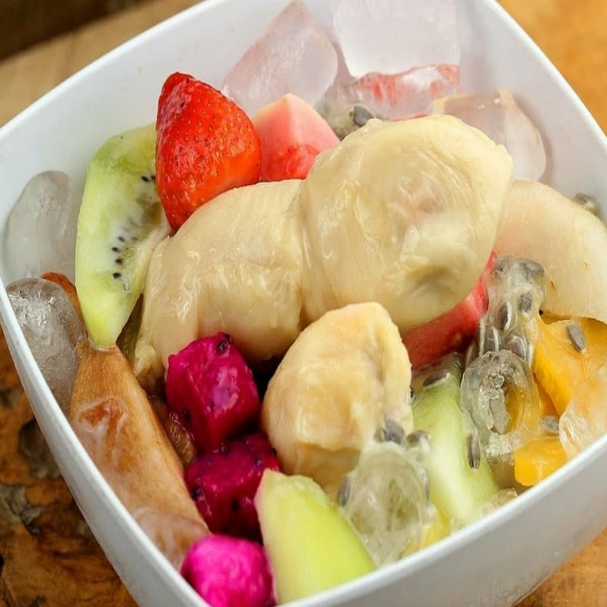
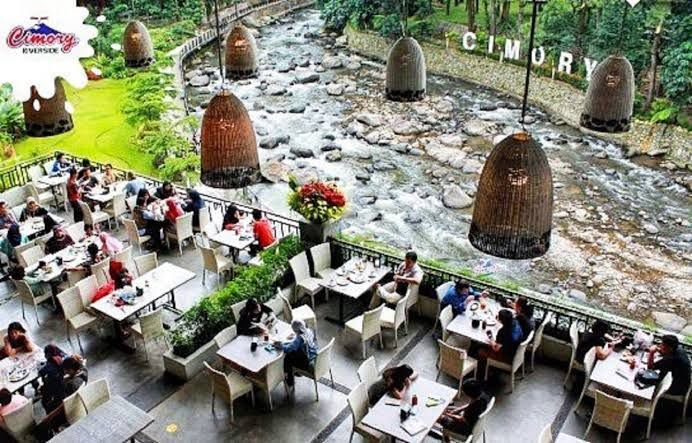
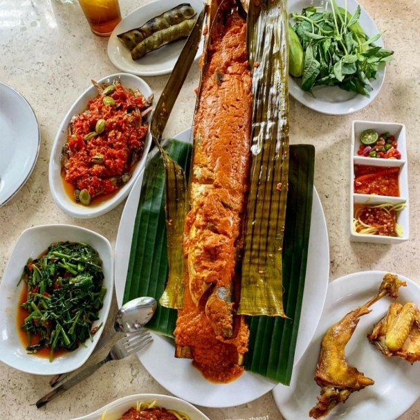
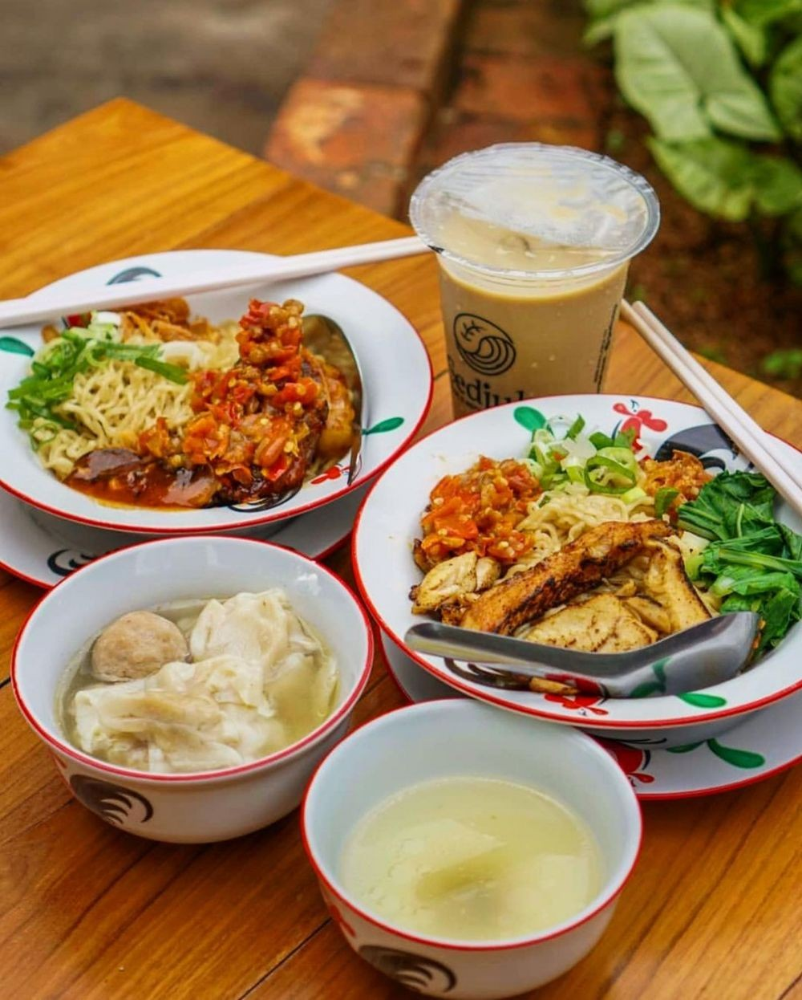

Rekomendasi Tempat Kuliner Terbaik Di Bogor

1. Sop Buah Pak Ewok
Wisata kuliner Bogor ini juga terbilang murah dan cocok menjadi santapan di siang hari terik.
Sop Buah Pak Ewok terkenal legendaris dan telah berdiri sejak tahun 80-an.
Dekat dengan stasiun, sop buah ini perpaduan buah segar dengan susu kental manis yang memanjakan lidah.
Salah satu menu andalan di tempat ini adalah sop buah durian, Moms. Makin tak sabar untuk mencicipinya, ya!
Lokasi: Jl. Prof Andi Hakim Nasoetion, Bogor no.15 (Samping IPB Botani). Buka dari 10.00 sampai 21.00 WIB.

2. Cimory Mountain View
Sesuai dengan namanya, restoran yang satu ini bukan hanya memberikan pemandangan gunung di Bogor saja.
Makanan yang enak sekaligus udara yang sejuk membuat pengunjung betah berlama-lama di sini.
Minuman khasnya adalah susu atau yoghurt Cimory. Kalau pergi ke daerah Puncak, jangan lupa mampir ya, Moms.
Harga menu di sini dibanderol mulai dari Rp30.000 saja.
Lokasi: Jalan Raya Puncak-Cianjur KM 77, No.415, Leuwimalang, Cisarua, Bogor. Buka dari pukul 10.00-22.00 WIB.
Rekomendasi Tempat Kuliner Terbaik Di Depok

1. Pondok Ikan Bakar Kalimantan
Restoran ini sangat terkenal dengan kelezatan ikan bakarnya. Menu andalannya berupa ikan patin, gurami, dan aneka olahan teri. Sementara itu, minumannya berupa jeruk peras, kopi susu, dan kelapa muda.
Jam operasional: 10.00-18.00 WIB
Harga: Rp7.000-Rp150.000
Lokasi: Jalan Raya Tapos Nomor 1, Kelurahan Tapos, Kecamatan Tapos, Kota Depok, Jawa Barat

2. Sedjuk Bakmi and Kopi
Restoran ini berada di rooftop yang menawarkan pemandangan Kota Depok. Nah, makanan yang bisa kamu pilih antara lain sandwich, burger, nasi goreng, dan sup iga. Untuk minumannya, pilihlah chai tea, lemon grass tea, dan palm juice mojito yang segar.
Jam operasional: 10.00-22.00 WIB
Harga: Rp10.000-Rp50.000
Lokasi: Rooftop Lantai 25 Apartemen Taman Melati Margonda 2 Tower C, Jalan Margonda Raya Nomor 525A, Kelurahan Pondok Cina, Kecamatan Beji, Kota Depok, Jawa Barat